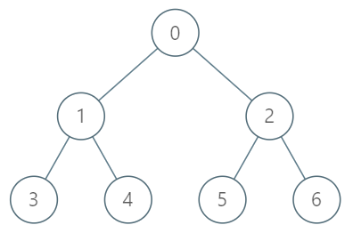

| Category | Difficulty | Likes | Dislikes |
|---|---|---|---|
| Algorithms | Hard | 2060 | 122 |
binary-search | dynamic-programming | bit-manipulation | tree | depth-first-search | breadth-first-search | design
google | amazon
You are given a tree with n nodes numbered from 0 to n - 1 in the form of a parent array parent where parent[i] is the parent of ith node. The root of the tree is node 0. Find the kth ancestor of a given node.
The kth ancestor of a tree node is the kth node in the path from that node to the root node.
Implement the TreeAncestor class:
TreeAncestor(int n, int[] parent) Initializes the object with the number of nodes in the tree and the parent array.int getKthAncestor(int node, int k) return the kth ancestor of the given node node. If there is no such ancestor, return -1.
Example 1:

Input
["TreeAncestor", "getKthAncestor", "getKthAncestor", "getKthAncestor"]
[[7, [-1, 0, 0, 1, 1, 2, 2]], [3, 1], [5, 2], [6, 3]]
Output
[null, 1, 0, -1]
Explanation
TreeAncestor treeAncestor = new TreeAncestor(7, [-1, 0, 0, 1, 1, 2, 2]);
treeAncestor.getKthAncestor(3, 1); // returns 1 which is the parent of 3
treeAncestor.getKthAncestor(5, 2); // returns 0 which is the grandparent of 5
treeAncestor.getKthAncestor(6, 3); // returns -1 because there is no such ancestor
Constraints:
1 <= k <= n <= 5 * 104parent.length == nparent[0] == -10 <= parent[i] < n for all 0 < i < n0 <= node < n5 * 104 queries.